welcome
about
Hayashi Minhee（ハヤシ ミンヒ） 東京都在住 UI/UX & グラフィックデザイナー 韓国ソウルHOSEO専門学校でコンピューアニメーション専攻 セツモードセミナーでファッションイラスト科専攻 PC＆モバイルのUI/UXデザイナー ゲームのUIデザイン ガールズイラスト きせかえ、絵文字、ゲームコンテンツ多数 2010.10~2011.7 フリーランサーデザイン外注 モバイル公式サイトのなどの制作 > More..
Hayashi Minhee（ハヤシ ミンヒ） 東京都在住 UI/UX & グラフィックデザイナー 韓国ソウルHOSEO専門学校でコンピューアニメーション専攻 セツモードセミナーでファッションイラスト科専攻 PC＆モバイルのUI/UXデザイナー ゲームのUIデザイン ガールズイラスト きせかえ、絵文字、ゲームコンテンツ多数 2010.10~2011.7 フリーランサーデザイン外注 モバイル公式サイトのなどの制作 > More..
